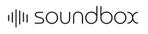

Trade Mark Journal No.2025/029 18 July 2025
UK00004230526 8 July 2025 (6,17,19,20)

- Class 6
- Laths of metal; Buildings, transportable, of metal; Doors of metal; Telephone booths of metal; Soundproof booths, transportable, of metal; Acoustic panels of metal; Building materials of metal with soundproofing qualities; Ironmongery; Door handles of metal; Door closers of metal, non-electric; Hinges of metal; Padlocks of metal; Safes [metal or non-metal]; Floors of metal; Roofing tiles of metal; Building materials of metal; Partitions of metal; Refractory construction materials of metal; Pre-fabricated houses of metal; Cabanas of metal.
- Class 17
- Synthetic rubber; Caulking materials; Carbon fibres, other than for textile use; Hoses of textile material; Soundproofing materials; Glass wool for insulation; Insulating refractory materials; Acoustic insulating materials; Insulating plaster; Padding materials of rubber or plastics; Acrylic resins, semi-processed; Latex [rubber]; Asbestos slate; Insulating felt; Foils of metal for insulating; Fibreglass for insulation; Non-conducting materials for retaining heat; Mineral wool [insulator]; Substances for insulating buildings against moisture; Insulating fabrics.
- Class 19
- Plywood; Roofing slates; Gypsum [building material]; Asbestos cement; Cement slabs; Roofing tiles, not of metal; Bituminous coatings for roofing; Doors, not of metal; Door panels, not of metal; Building materials with soundproofing qualities, not of metal; Telephone booths, not of metal; Cabanas, not of metal; Soundproof booths, transportable, not of metal; Buildings, transportable, not of metal; Insulating glass for use in building; Coatings [building materials]; Buildings, not of metal; Partitions, not of metal; Building materials, not of metal; Door frames, not of metal.
- Class 20
- Furniture; Office furniture; Height adjustable tables; School furniture; Coatstands; Valet stands; Picture frames; Furniture fittings, not of metal; Window fittings, not of metal; Door fittings, not of metal; Doors for furniture; Typing desks; Beds; Sofas; Chairs [seats]; Door handles, not of metal; Padlocks, not of metal, other than electronic; Door openers, not of metal, non-electric; Sash fasteners, not of metal for windows; Work benches.
SOUNDBOX INC
Representative: Baiyi Xu